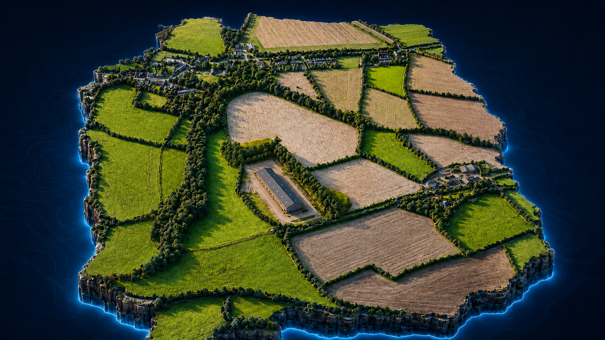
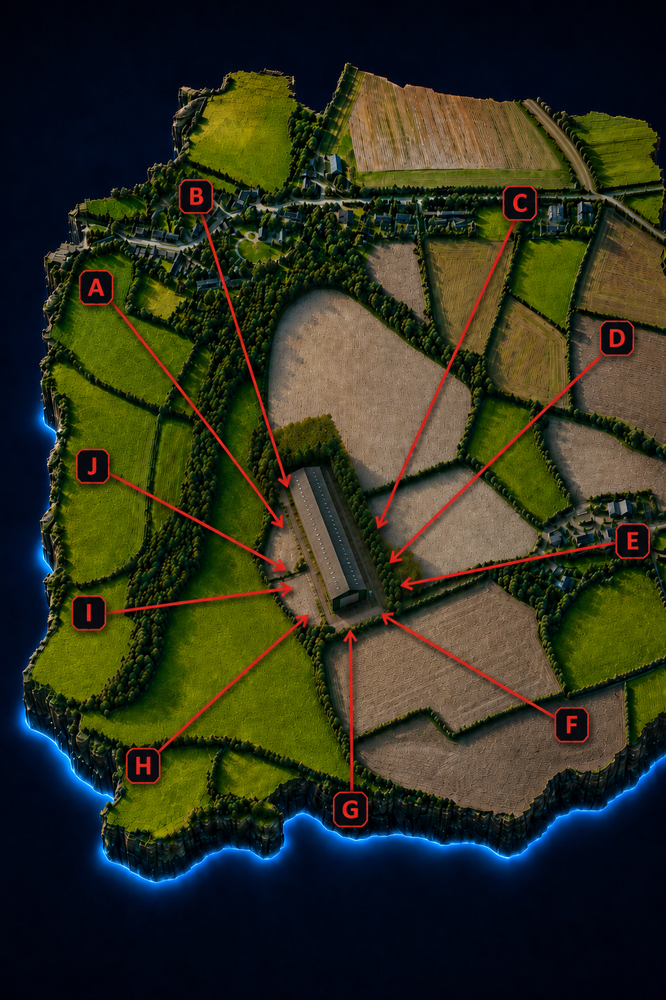

Orthomosaic
Base map for site briefing, drawings and design coordination.
Orthomosaic
Base map for site briefing, drawings and design coordination.
FutureScaping Labs
Survey evidence pack
Planning and presentation
Survey Evidence
Planning Visuals
Drone mapping, 3D models, viewpoint evidence and map layers presented in one clear planning-focused workspace.
Start with the overall planning model, then step into scene views, saved viewpoints and technical mapping layers without leaving the same presentation route.

 Orthomosaic
Base map for site briefing, drawings and design coordination.
Orthomosaic
Base map for site briefing, drawings and design coordination.
 Surface model
Height-based reading of the site and surrounding landform.
Surface model
Height-based reading of the site and surrounding landform.
 Contours
Simple supporting landform layer for explainers and download packs.
Contours
Simple supporting landform layer for explainers and download packs.

Viewport map Location reference for rendered planning visuals and evidence sequencing.What it shows
How SiteView can combine context, 3D massing, map layers and visuals in one client-facing experience.
Offline compromise
This bundle focuses on the strongest planning screens and supporting layers rather than the live online model links.
How it is used
Lead with the main hero, then use the inset and supporting layer strip to explain the workflow from drone capture to planning review.